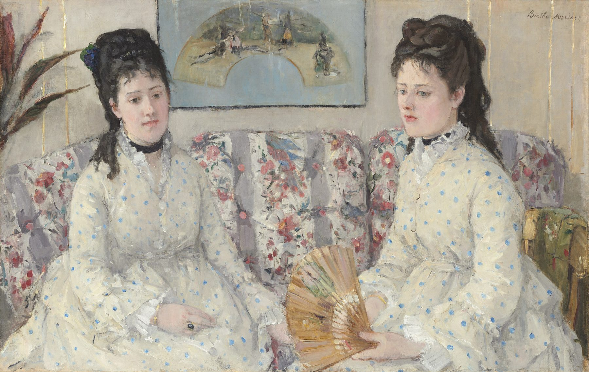

Poems
Dear Sister, When I Painted Your Portrait—
after Berthe Morrisot by Edme Morrisot

I It was as if I painted my own self-portrait. Not as I am now, but as a Self I thought I would always be. We would always be. When I asked, you hesitated. Wear your vermillion shirt and headband, I cajoled. Let me paint you at your easel painting. How ambitious we were then, remember? Once you and I painted together, our easels nearly touching. Sharing tips, and inhaling the scent of linseed oil—our favorite perfume. Oh Berthe, how foolish I was to think our lives one endless canvas. An inexhaustible supply of pigments and brushes. II When you were born, Yves and I stood shy in the doorway. Come meet your new sister. Mama smiled. We approached the bed. Our big sister and I took turns as Papa picked each of us up to see you. I leaned forward, touched your ear. Careful! Papa said. III Yves was like a second mother. Together we three learned to read, play piano, braid our hair. But— it was my hand you held, Berthe. IV Remember those drawing lessons Mama arranged for us to create Papa’s special birthday gift? You and I were twinned. Pencil, charcoal and chalk to paper— we thrilled to self-made marks! V We became copyists at the Louvre, traveled and exhibited our paintings. Shared our ambitions, each other’s most trusted confidante. VI Women must marry and put aside their passions. I turned thirty, what else could I do? The end of girlhood and the beginning of something else entirely. How much I envied you—your bold ease— the way you always knew what you wanted. Even before my marriage, Edouard replaced me in your affections—don’t try to argue. It’s true. Gossips wagged their tongues. You were his favorite model, but he never painted you as a loose woman. He never painted you at your easel, either. Always, in repose. Solemn. Refined. Dark eyes hiding secrets. Tendrils of hair like ribbons to untie. VII Admit it, sister! It was I who captured your beauty forged in intelligence and fire. Back when I thought I possessed your bravery, too. Now my shaking hands can no longer hold a brush, and I’ve forgotten what I once knew. I miss you, sister. I miss our shared confessions. Of all my paintings, Dear Berthe, your portrait is the one I most admire. The one that haunts me still.
Robin Michel’s poetry appears in many journals and anthologies, including Cloudbank, Ekphrastic Review, Gordon Square Review, Passionfruit Poetry, The MacGuffin, San Antonio Review Unbroken Journal, and elsewhere. Robin worked as a communications specialist for K-14 educational institutions and nonprofits before focussing full-time on writing and editing. She also served as fine arts program coordinator or docent in public schools for over fourteen years. Robin lives in San Francisco and spends much of her free time wandering fine arts museums.